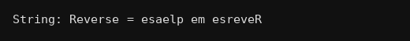

package strings;
import java.util.Scanner;
public class Q059 {
public static void main(String[] args) {
Scanner kb = new Scanner(System.in);
System.out.print("String: ");
String s = kb.nextLine();
String r = "";
for(int i=s.length()-1;i>=0;i--)
r = r + s.charAt(i);
System.out.println("Reverse = "+r);
}
}